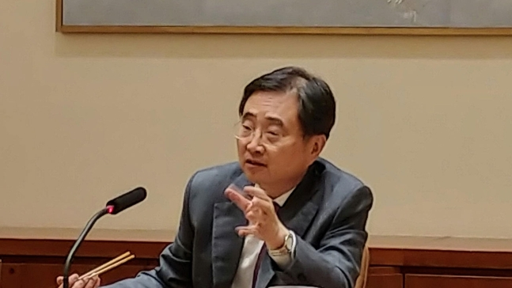

한국농수산식품유통공사 김춘진 사장은 미국 현지시간 16일 조현 UN주재 한국대사를 만나 먹거리 차원의 탄소 배출량 줄이기 캠페인인 ‘글로벌 그린푸드 데이’에 대해 설명하고, ‘글로벌 그린푸드 데이’가 UN을 통해 전 세계로 확산될 수 있도록 협력을 요청했다.
이어서 17일에는 구독자 575만명을 보유한 북미 최고 파워 유튜버인 ‘망치(Maangchi)’를 만나 유튜브를 활용한 김치 등 한국 대표 농수산식품의 온라인 마케팅방안을 논의하고, 먹거리 차원의 탄소 배출량 줄이기 캠페인인 ‘글로벌 그린푸드 데이’에 동참해 줄 것을 당부했다.
한편, 공사는 먹거리의 생산-유통-소비 전 과정에서 발생하는 온실가스 배출량을 줄이는 저탄소 식생활 캠페인 ‘코리아 그린푸드 데이’를 범국민 캠페인으로 추진 중이며, 세계인이 함께 동참하여 지구를 지키는 저탄소 식생활 문화 캠페인으로 ‘글로벌 그린푸드 데이’ 확산에도 노력하고 있다.